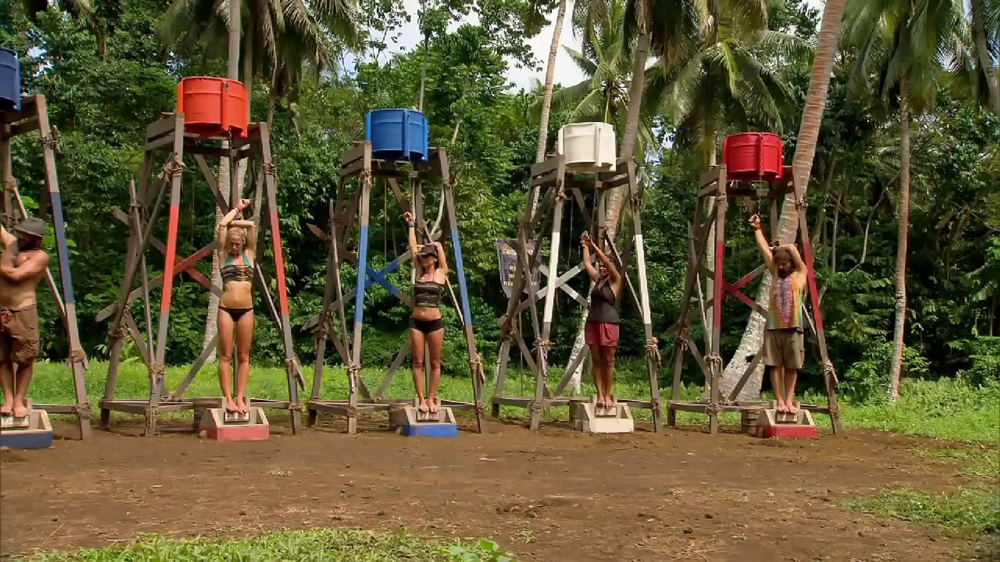

Survivor Challenges
Survivor challenges test contestants’ endurance, strategy, and focus. They range from obstacle courses and puzzles to extreme endurance competitions that push players to their limits. These challenges often take place in harsh weather conditions and are designed to test both physical and mental stamina.
One of the most notorious challenges is "When It Rains, It Pours", which Parvati Shallow has won twice, making her the first contestant in Survivor history to do so. This individual immunity challenge is considered her “signature” because of its difficulty. Contestants must stand with one arm raised, their wrist tethered to a bucket of water. The challenge requires incredible strength, balance, and focus: if the arm drops even slightly, the bucket tips and drenches the player. Parvati’s ability to maintain her arm in position for hours demonstrates the extreme endurance needed to survive these challenges and highlights how Survivor tests both physical skill and mental determination.
In Season 16: Fans vs. Favorites, contestants faced other multi-hour endurance challenges that combined physical balance with mental focus. Only those with patience, grit, and strategy could last until the end. Challenges like these show that Survivor is more than luck, it’s a test of true perseverance and determination.
"Survivor challenges push contestants to the edge, showing both skill and perseverance."
